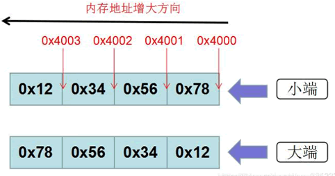

NumPy字节交换
数据以字节的形式存储在计算机内存中，而存储规则可分为两类，即小端字节序与大端字节序。
小端字节序（little-endian），表示低位字节排放在内存的低地址端，高位字节排放在高地址段，它与大端字节序（big-endian）恰好相反。
对于二进制数 0x12345678，假设从地址 0x4000 开始存放，在大端和小端模式下，它们的字节排列顺序，如下所示：
小端字节序（little-endian），表示低位字节排放在内存的低地址端，高位字节排放在高地址段，它与大端字节序（big-endian）恰好相反。
对于二进制数 0x12345678，假设从地址 0x4000 开始存放，在大端和小端模式下，它们的字节排列顺序，如下所示：

图1：字节存储模式
小端存储后：0x78563412 大端存储后：0x12345678。numpy.ndarray.byteswap()
该函数将数组中每个元素的字节顺序进行大小端调换。示例如下：import numpy as np a = np.array([1, 256, 8755], dtype = np.int16) #数组a print(a) #以16进制形式表示内存中的数据 print(map(hex,a)) #byteswap()函数通过传递True参数在适当的位置进行转换 #调用byteswap()函数 print(a.byteswap(True)) #十六进制形式 print(map(hex,a))输出结果：
数组a [ 1 256 8755] 以十六进制形式表示内存中的数据 <map object at 0x03445E10> 调用byteswap()函数 [ 256 1 13090] 十六进制形式 <map object at 0x03445FB0>
关注公众号「站长严长生」，在手机上阅读所有教程，随时随地都能学习。内含一款搜索神器，免费下载全网书籍和视频。

微信扫码关注公众号